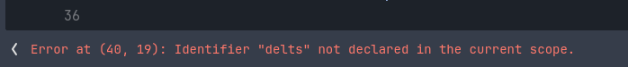
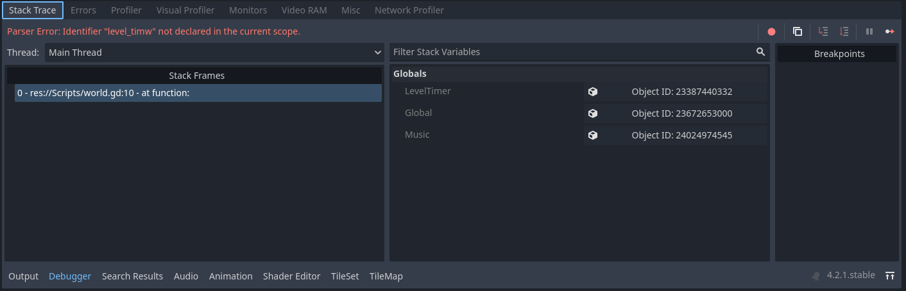
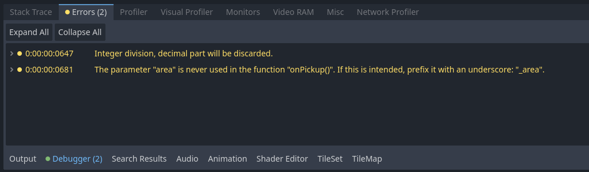

Code will break, and it will break a lot. One of the most important skills to have as a game developer (and just an important skill in general) is knowing how to pinpoint where an issue is arising, and figuring out how to fix it. Fortunately there are many useful tools provided by Godot that you can use to help in this process.
When it comes to bugs in code, the vast majority of errors are on of what I call the big three: Spelling, Syntax and Arguments.
Most mistakes we make will be caught by Godot pretty quickly, causing the engine to highlight the offending lines in red and showing an Error Message at the bottom of the script. While at first the messages may be hard to understand, as you begin to piece together the common issues you will get a good sense of what each means. Most mistakes in the script screen itself are pretty quick to fix.
This example shows an error message pointing to line 40, 19 characters in where the variable delts was not declared in the current scope (aka in the current script or function.) This is a pretty simple fix though, as I just mispelled delta. I can quickly remedy that and move on.
By far one of the most useful tools Godot provides for debugging is the Stack Trace. To get to it go to the bottom bar and select debugger. The default tab should be the stack trace. Here is where fatal errors will appear when your try and run your game. The errors will appear in the left most box as a list. Each error shows the path to the script that caused the issue, as well as what line the error was detected. By clicking the error, you can directly open the troublesome script to the exact line Godot was having trouble with. Additionally, at the top of the stack trace will also show the error message from Godot, very similarly to the errors messages that appear in the script screen.
This example shows an error in the world script (located in the scripts folder.) More specifically, on line 10 of the script there was an error where Godot could not find anything called "level_timw" in the current scope. Of course, there is no level_timw because I made yet another spelling mistake. Fortunately, I can get back to the correct line and fix it by making sure I spelled everything correct.
Next to the stack trace tab is the Errors tab. This tab works similarly to it's neighbor, however, it shows non-fatal errors, or errors that do not cause your game to crash. While usually these messages are just warnings and usually can be ignored, sometimes these errors can lead to strange, unintended or even broken code. If all else fails, check these warnings to see if the offending area shows up. You can also select the errors to see exactly where the error is as well as more details about the error.
This example shows two errors. The first one is simply letting me know that I am using integer division in my script and Godot will remove all decimals from it, and the second error says I have a parameter I am not using, and provides a simple fix to get rid of the error.
Sometimes something just won't work even though there are no errors. The game will run, everything works, but just this one thing simply won't do what it is supposed to. In cases like this there likely no actual, tangible mistakes in the code itself, but instead an error in how we structured or applied it. When this happens we must use our secret weapon: the print to console method. You can find the console on the bottom bar labelled output. By adding Print("Your message here") anywhere in a function you can check if that line (and by proxy the surrounding code) is successfully being ran. By layering these throughout the troublesome functions you can relatively quickly pinpoint the breaking point. Printing to console doesn't tell you how to fix whatever is happening wrong, but it is much faster to find where a problem is actually happening before you start trying fixes at random.
print("Player jumped!")When you are absolutely stuck on something, look it up. There is nothing wrong with not knowing how to do something, and by exploring options you can spark ideas to try something else. There are lots of videos and forums online for Godot, and the engine itself has some pretty solid documentation. And of course, if you are taking this in person, you can always ask your instructor(s).
And that is the basics of debugging. It's really more of an art than a science, but as you learn more you will gain an intuitive sense of the process. Things will be breaking constantly, but that is just one of the joys of programming. Good luck, and go ahead and move on to a different module!